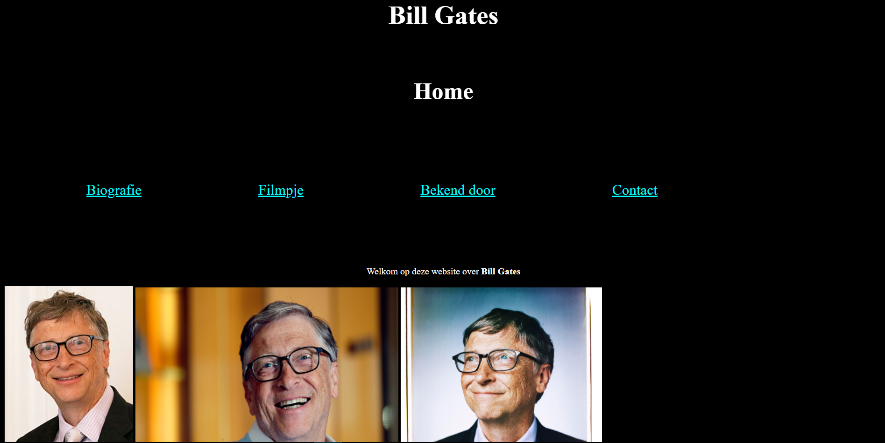
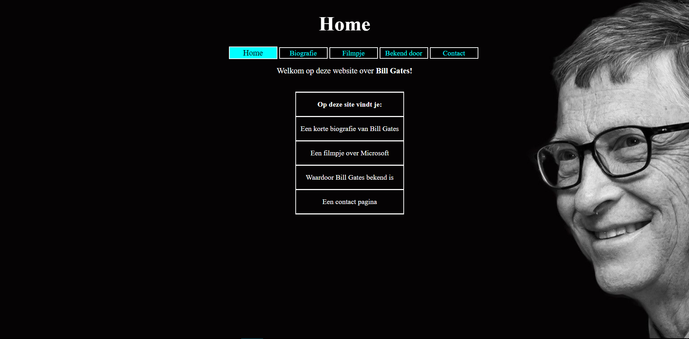

Ik heb de module HTMLCSS-1 in jaar 2 afgerond. Ik had weinig moeite met de module omdat er nauwelijks nieuwe concepten werden geïntroduceerd, zoals in HTMLCSS-0 wel het geval was omdat ik nog niks van HTML of CSS wist.
Voor HTMLCSS-1 moest je de site van HTMLCSS-0 beter opmaken en een paar dingen toevoegen. Ik vind het leuk om te zien hoe erg mijn tweede website is verbeterd ten opzichte van mijn eerste. Je kunt mijn websites bekijken door op de plaatjes te klikken. Klik op de bovenste voor HTMLCSS-0 en de onderste HTMLCSS-1.
De plaatjes rechts zijn screenshots van de homepagina's van mijn websites voor HTMLCSS-0 en HTMLCSS-1. Wat een verschil!
 